1Introduction
This manual is a reference designed to familiarize you with the BNC Model 525 Series Pulse Generator and is arranged so that you can easily find the information you are looking for. Generally, each topic has its own section and no section assumes that you have read anything else in the manual.
Technical specifications including electrical ratings and weight are included within the manual. See the Table of Contents to locate the specifications and other product information. The following classifications are standard across all BNC Test and Measurement products.
- Indoor use only
- Ordinary Protection: This product is NOT protected against the harmful ingress of moisture.
- Class 1 Equipment (grounded type)
- Main supply voltage fluctuations are not to exceed +/-10% of the nominal supply voltage.
- Pollution Degree II
- Installation (overvoltage) Category II for transient overvoltage events
- Maximum Relative Humidity: 0-80% RH, non-condensing
- Operating temperature range of 0 °C to 40 °C
- Storage and transportation temperature of -40 °C to 70 °C
- Maximum altitude: 2000 m (6562 ft.)
- This equipment is suitable for continuous operation.
- Cleaning Instructions: Light dusting with cloth damp with water and/or usage of compressed air is all that is needed.
1.1 Technical Support
For questions or comments about operating the Model 525 our technical staff can be reached via one of the following methods:
- Phone – (415) 453-9955
- Fax – (415) 453-9956
- Email – info@berkeleynucleonics.com
- Internet – www.berkeleynucleonics.com
1.2 Warranty
Warranty is 1 Year standard, unless otherwise specified. Materials and workmanship, return to manufacturer included. If repairs are required during the warranty period, contact the factory for component replacement or shipping instructions. Include the serial number of the instrument. This warranty is void if the unit is repaired or altered by others than those authorized by Berkeley Nucleonics Corporation.
1.3 Package Contents
The box you receive should contain the following:
- Model 525 Digital Delay / Pulse Generator
- USB Cord
- Disk that includes: Operating Manual, Software Drivers, Application Software
Contact BNC (415) 453-9955 if any parts are missing.
2Safety Issues
Normal use of test equipment presents a certain amount of danger due to electrical shock because it may be necessary for testing to be performed where voltage is exposed.
Your normal work habits should include all accepted practices that will prevent contact with exposed high voltage and steer current away from your heart in case of accidental contact with a high voltage. You will significantly reduce the risk factor if you know and observe the following safety precautions:
- If possible, familiarize yourself with the equipment being tested and the location of its high-voltage points. However, remember that high voltage may appear at unexpected points in defective equipment.
- Do not expose high voltage needlessly. Remove housing and covers only when necessary. Turn off equipment while making test connections in high-voltage circuits. Discharge high-voltage capacitors after shutting down power.
- When testing AC powered equipment, remember that AC line voltage is usually present on power input circuits, such as the on-off switch, fuses, power transformer, etc.
- Use an insulated floor material or a large, insulated floor mat to stand on, and an insulated work surface on which to place equipment. Make certain such surfaces are not damp or wet.
- Use the time-proven "one hand in the pocket" technique while handling an instrument probe. Be particularly careful to avoid contact with metal objects that could provide a good ground return path.
- Never work alone. Someone should always be nearby to render aid if necessary. Training in CPR first aid is highly recommended.
3Certificate of Conformance
The Model 525 ships with the following Declaration of Conformity.
4Front & Back Panel Overview
4.1 Front Panel
4.1.1 Indicators
A total of up to 9 separate LED indicators are included on the front panel of the 525. The following details the type of indication they represent.
- Power – Indicates the unit is powered on.
- Channel A-F – Indicates which channels are in the enabled state.
- Active – Indicates the unit is armed and/or channels are actively pulsing (or waiting to be triggered).
- Ext In – Indicates external mode is either set to gate or trigger.
4.1.2 Run/Stop/Power Button
The Run/Stop button serves the dual purpose of both powering on/off the unit as well as enabling/disabling the system output. It should be noted that only a short press is needed to both turn on and arm/disarm the unit. The button needs to be pressed and held for approximately 1 second in order to power off the unit. In the power off sequence the active settings are saved and reloaded when the unit is power back on.
The following image represents the front panel of a 525.
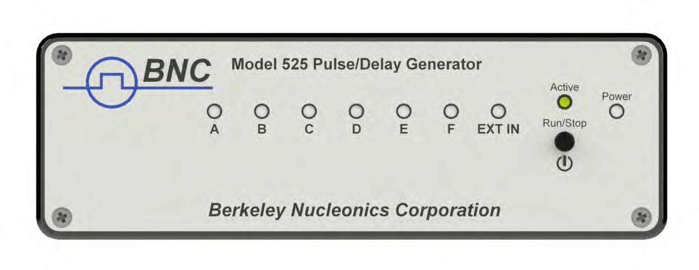
4.2 Back Panel
4.2.1 Indicators
A total of up to 10 separate LED indicators are included on the back panel of the 525. The following further details the type of indication they represent.
- PWR – Indicates the unit is powered on.
- Channel A-F – Indicates which channels are in the enabled state.
- Active – Indicates the armed channels are actively pulsing (or waiting to be triggered).
- Gate/Trig – Indicates which mode the external input is in. If neither is illuminated, the unit is in internally triggered mode.
4.2.2 BNC Output Connectors
Standard BNC connectors are found on the back panel which output the pulses for their respective channel.
4.2.3 USB
A "Standard B" female type USB connector is found on the back panel. This provides power to the unit as well as communication (on standard units).
4.2.4 Run/Stop/Power Button
The Run/Stop button serves the dual purpose of both powering on/off the unit as well as enabling/disabling the system output. It should be noted that only a short press is needed to both turn on and arm/disarm the unit. The button needs to be pressed and held for approximately 1 second in order to power off the unit. In the power off sequence the active settings are saved and reloaded when the unit is power back on.
4.2.5 Gate/Trigger Input
The Gate/Trig input allows external signals to either trigger or gate output events depending on setup.
4.2.6 Clock In / Clock Out
The Clock In allows external synchronization with other instruments. Various clock frequencies can be applied to the input when the unit is set to external clock mode. The Clock Out will output various frequencies as well as a T0 signal. These outputs are user selectable.
The following image represents the back panel of a 525.
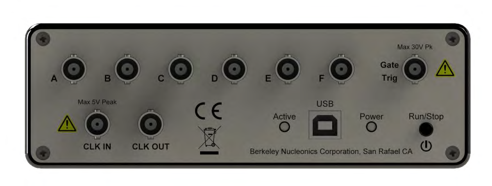
5Pulse Concepts and Pulse Generator Operations
5.1 Counter Architecture Overview
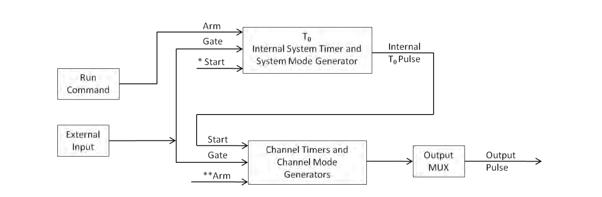
*Start source is:
- Run/Stop button/function in Internal Modes
- External input in External Trigger modes
- *TRG command via Serial access
**Channels are armed by the Run/Stop function (external button or through 525 application). In single shot and burst modes channels may be rearmed by pressing the RUN button again.
5.2 System Timer Functions
The System Timer functions as a non-retriggerable, multi-vibrator pulse generator. This means that once started, depending on the mode, the timer will produce pulses continuously. Before pulses can be generated, the timer must be armed and then receive a start pulse. Arming the counter is done by enabling the Run/Stop function by either the external button or through the 525 application. With external trigger disabled, the Run/Stop function also generates the start command for the counter. With external trigger enabled, the external trigger provides the start pulse. In either case, once started, the counter operation is determined by the System Mode Generator. Standard modes include:
- Continuous – Once started T0 pulses are generated continuously.
- Single Shot – One T0 pulse is generated for each start command.
- Burst – "N" T0 pulses are generated for each start command.
- Duty Cycle – Once started T0 pulses cycle on and off continuously.
The T0 pulse is distributed to all of the start inputs of the Channel Timers and Mode Generators.
5.3 Channel Timer Functions
The Channel Timer functions as a non-retriggerable, delayed, one shot pulse generator. This means that the timer will only generate one delayed pulse for every start pulse received. Once the channel timer has started counting, additional start pulses will be ignored until the pulse has been completed (non-retriggerable). The start pulse for each channel is provided by the internal T0 pulse generated by the internal system timer. Whether or not a pulse is generated for each T0 pulse is determined by the Channel Mode Generator. Standard modes include:
- Normal – A pulse is generated for each T0 pulse.
- Single Shot – One pulse is generated for the first T0 pulse, after which the output is inhibited.
- Burst – "N" number of pulses are generated for each T0 pulse, after which the output is inhibited.
- Duty Cycle – "N" number of pulses are produced, one for each T0 pulse, after which "M" number of pulses will be inhibited, one for each T0 pulse. The cycle is then repeated for each subsequent T0 pulse.
A different mode may be selected for each channel, allowing a wide variety of output combinations. Each output may also be independently disabled or gated (using the external gate input).
5.4 Digital Output Multiplexer
The outputs of each of the Channel Timers are routed to a set of multiplexers. This allows routing of any or all Channel Timers to any or all of the units' outputs. In the normal mode of operation, the output of the nth Channel Timer is routed to the nth output connector. As an example, if a double pulse is required on Channel A, one can multiplex the Channel A timer with the Channel B timer, then adjust each timer to provide the necessary pulses. Only the timing parameters are multiplexed together, not the actual output amplitudes.
5.5 Dependent & Independent Timing Events (Sync Function)
The 525 allows the user to control the relationship between the Channel Timers by setting the sync source for each timer. Independent events are all timed relative to the internal T0 start pulse. Dependent events may be linked together by setting the sync source to the controlling event. This allows the instrument to match the timed events and adjustments can be made in one event without detuning the timing between it and the dependent event.
5.6 Navigating the 525
Primary control of the 525 is carried out either through the 525 application (see 525 Application Menus) or through unit specific commands using a terminal program via USB (see Programming the 525). The Run/Stop buttons found on either side of the 525 serve the purpose of both power on/off as well as enabling/disabling the system output.
5.7 Enabling System Output
The Run/Stop button found on both the front and back panel of the 525 is used to arm the system. With external trigger disabled, the button will arm and start pulse output. With external trigger enabled, the button will arm the pulse generator. Pulse outputs then starts after the first valid trigger input. Pressing the Run/Stop button a second time disables the pulse generator.
6525 Setup
6.1 Overview
The 525 can easily be interfaced by means of the included 525 application. On standard models, a USB cable and a port with USB 2.0 capabilities or greater (recommended) are required to communicate with the unit. If the equipment is used in a manner not specified by the manufacturer, the protection provided by the equipment may be impaired.
6.2 Power
The 525 requires a +5VDC±250mV (≤470mA) power supply to operate. When the power is supplied from a computer device, it is recommended that a USB 2.0 port (or greater) is used. The unit may also be powered directly from a 5VDC USB DC wall-mount supply (≥470mA). The current draw is highly dependent on the external loads. If all loads are high impedance, the unit will require far less current to operate correctly.
The USB cable should be plugged into the rear panel of the unit that is labeled USB. The multi-functional power button, labeled "Run/Stop," located on both front and back of the unit will turn on the 525 when pressed once. If a USB DC wall-mount supply is chosen to be used, it is recommended that the AC Mains Socket-Outlet be easily accessible so that the external power supply can be easily removed from the AC Mains Socket Outlet.
6.3 Communication
The 525 provides a standard USB connection for remote communications.
6.4 USB
When the 525 is connected to a remote computer via the USB connection, the computer will recognize the unit as a USB to Serial Port Adapter. Normally the Windows operating system will automatically install drivers for the 525, but in the event it does not and drivers need to be installed, the following steps can be followed depending on the version of the operating system. Drivers are included on the provided CD. Once the drivers have been installed, the 525 will show up in the device manager as a USB to Serial Port Adapter. The 525 can then be communicated with by either the included 525 application or by using any generic communication terminal program. The unit is baud rate independent, so any speed can be selected. Typically a rate of 115,200bps can be used.
6.4.1 Driver Installation (Windows XP)
- Plug the 525 into the computer using a USB cable. Make sure the unit is powered on.
- The computer will display a message indicating it has found new hardware: "BNC-PG".
- The new hardware wizard will launch. Check the "Install from a list or specific location" option and click next.
- Select "Search for the best driver in these locations" and check the option to "Include this location in the search". Click the browse button and locate the folder on the CD where the 525 drivers are located. Click next.
- A message window will launch asking if you want to continue installing this driver. Select the "Continue Anyway" button.
- It should now indicate that it is installing a driver for a "BNC-PG USB Communications Port".
- Once the process is finished, a message will indicate that the drivers have been successfully installed.
- You can now communicate with the 525 using either the included 525 application or by using any generic communication terminal program. You can view the Com Port number assigned to the 525 in your computers device manager under Ports.
6.4.2 Driver Installation (Windows 7 and Greater)
- Plug the 525 into the computer using a USB cable. Make sure the unit is powered on.
- A message will pop up on the computer indicating it has found new hardware and is installing device driver software.
- A message will indicate that the device drivers have not been successfully installed. The Action Center may then launch with a list of options. Close the Action Center and do not launch any of the actions.
- Go to your computers device manager. This can be done by one of two ways. a) Right click on the desktop "Computer" icon and select properties. Select Device Manager on the left toolbar. b) Navigate to Control Panel and then Device Manager.
- In Device Manager you should see a device under the Other Devices called the BNC-PG. There will be a yellow exclamation point next to it.
- Right click on the BNC-PG and select update driver software.
- Select "Browse My Computer" for driver software and browse to the location of the USB drivers for the 525. The location is typically found on the software CD. It will contain a file called "525cdc.inf". Select the folder in which the file resides, not the file itself. Click next.
- Windows will then indicate a warning window that the drivers are not verified. Select "Install this driver software anyway".
- A message will then indicate that the drivers have been successfully updated and a BNC525 USB Communication Port is now available.
- You can now communicate with the 525 using either the included 525 application or by using any generic communication terminal program. You can view the Com Port number assigned to the 525 in your computers device manager under Ports.
7525 Application
7.1 525 Application Overview
Aside from using the SCPI command protocol, the included software application is the primary means of communication with the 525. This application allows simple control of the 525 unit via the USB communications port. To run the software, simply double click on the application which can be found on the included CD. No installation is required. The software can also be copied to your computer and run from any location. The screenshot shown on the following figure shows the 525 application and all of the corresponding default parameters:
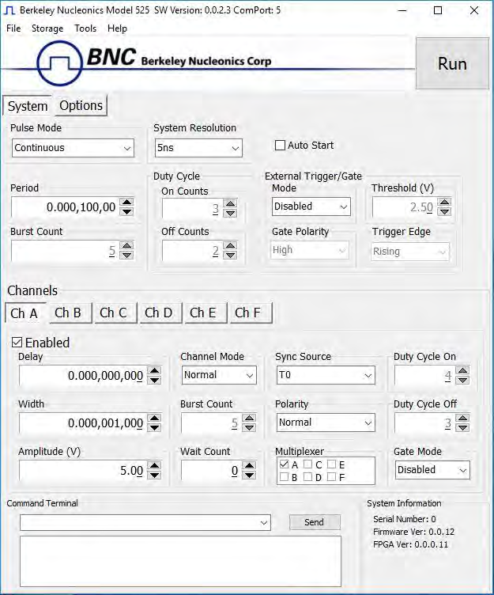
7.2 Basic Operation
The following steps must be carried out before communication with the 525 may take place:
- Ensure that the proper drivers have already been installed on the remote computer. These drivers will need to be installed for the remote computer to interface to the 525. Reference the "525 Setup, USB" section for more information on installing the proper drivers.
- Open the 525 application by double clicking on the application which can be found on the included CD.
- Once the 525 application recognizes the COM Port the 525 is attached to, a connection will be established, and communication may now be carried out.
7.2.1 System Section
The System Section of the 525 application only affects the 525's system parameters. As shown below, the following system parameters may be altered:
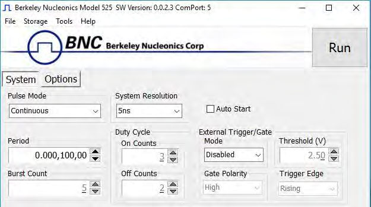
- Pulse Mode: Changes the system's output mode to Continuous, Single Shot, Burst, or Duty Cycle.
- Period: Sets the System's T0 period. Valid inputs are 200ns–1000s set in 10ns increments.
- System Resolution: Changes the system resolution between 4ns and 5ns. This affects the period, widths and delays. This will also affect some of the system performance specifications.
- Duty Cycle: If Duty Cycle has been selected in the System's Pulse Mode, the unit will generate a continuous pulse stream in which outputs will be On for "N" pulses and Off for "M" pulses. One may alter the "N" (On) and "M" (Off) parameters:
- On Counts ("N"): Positive integer value which designates the number of pulses to produce during the "On Cycle." Valid inputs are 1-1,000,000.
- Off Counts ("M"): Positive integer value which designates the number of pulses to suppress during the "Off Cycle." Valid inputs are 1-1,000,000.
- Burst Count: If Burst mode has been selected in the System's Pulse Mode, the Burst Counts positive integer input selects the number of T0 pulses generated once the Run/Stop button has been pressed. Valid inputs are 1-1,000,000.
- Run: Enables or disables the output for all channels. This command is the same as pressing the Run/Stop button on either the front or back panel.
- Auto Start: Enables or disables the Auto Start function. If enabled, the unit will start pulsing immediately upon power-up or be in an armed state if in external mode.
- External Trigger/Gate: Selects the system's External Mode to be Disabled, Triggered, Gated, or ReArm. If either Triggered, Gated or ReArm is selected, the following sub-parameters may be set.
- Threshold (V): Sets the trigger threshold Voltage in 10mV increments. Typically this value should be set to 50% of the incoming trigger voltage for optimum trigger response. Valid threshold values are 0.20V-15V. The unit can handle up to a 30V external input.
- Polarity: If the External Mode has been set to Gated, alter the Polarity to the required polarity. Active low or active high are the available modes.
- Trigger Edge: If the External Mode has been set to Triggered, alter the Trigger Edge to the required transition. Rising or falling edge are the available modes.
7.2.2 Channels Section
The Channels Section of the 525 application only affects the 525's channel parameters. Complex pulse trains can be created by combining various system and channel modes. As shown below, the following channel parameters may be altered:
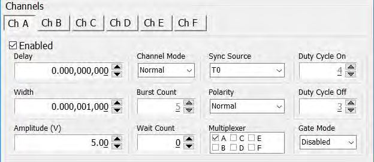
- Channel Selection: Select the proper Channel tab in order to further edit the parameters on the corresponding channel.
- Enabled: Enables and Disables the output for the selected channel.
- Delay: Sets the delay from the timing reference to when the pulse is created. Valid input is ±1000s with 10ns increments. Note: negative delays are only applicable if you are referenced to a channel that has a positive delay.
- Width: Sets the pulse width for the selected channel. Valid input is 10ns – 1000s with 10ns increments.
- Amplitude: Allows the user to select the voltage amplitude of the output. Valid values are 3.3V – 5V with 20mV increments.
- Channel Mode: Changes the Channel Mode to Normal, Single Shot, Burst, or Duty Cycle.
- Normal: Channel will produce pulses as long as a T0 is present (mimics System Pulse Mode).
- Duty Cycle: If Duty Cycle has been selected in the Channels section, the unit will generate a continuous pulse stream in which outputs will be On for "N" pulses and Off for "M" pulses. One may alter the "N" (On) and "M" (Off) parameters:
- On Counts ("N"): Positive integer value which designates the number of pulses to produce during the "On Cycle." Valid inputs are 1-1,000,000.
- Off Counts ("M"): Positive integer value which designates the number of pulses to suppress during the "Off Cycle." Valid inputs are 1-1,000,000.
- Burst Counts: Selects the number of pulses to output with each input clock pulse. Valid input is 1-1,000,000.
- Single Shot: Will produce one pulse each time the channel is armed.
- Sync Source: Selects the timing reference for the selected channel. Each channel may be set to sync to T0 or may be set to sync to a different channel. It should be noted that if a channel is set to sync to a separate channel a negative delay may be used as long as that delay does not require the pulse be produced before the T0 pulse is produced. For example: the value of (T0 + Sync source delay + channel delay) must be greater than or equal to 0.
- Wait Counts: Selects how many T0 pulses to wait until the channel outputs its first pulse. Valid input is 0-1,000,000.
- Polarity: Selects the Channel's Polarity. Normal is active HIGH, Inverted is active LOW.
- Mux: The outputs of each of the Channel Timers are routed to a set of multiplexers. This allows routing of any or all Channel Timers to any or all of the units' outputs. In the normal mode of operation, the output of the nth Channel Timer is routed to the nth output connector. As an example, if a double pulse is required on Channel A, one can multiplex the Channel A timer with the Channel B timer, then adjust each timer to provide the necessary pulses. Only the timing parameters are multiplexed together, not the actual output amplitudes.
- Gate Mode: Selection determines which active state will gate the selected channel output.
7.2.3 Options Section
The Options Section of the 525 application has additional advanced features. The following figure shows the additional options:
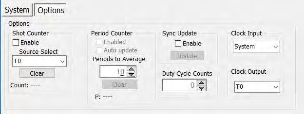
- Shot Counter: The "Shot Counter" can be set up to count the system (T0) or any of the available channel outputs. This counter is a 32 bit counter that can be enabled and reset by the user by means of the "Enable" selection and "Clear" button.
- Period Counter: The "Period Counter" measures the period of the incoming external trigger pulses. The period counter must be first enabled by means of the "Enable" selection. This counter can average up to 15 periods for greater accuracy. This is controlled under the "Periods to Average." If the period counter is selected to run in manual mode ("Auto Update" not enabled), it will latch the incoming period measurement and hold the reading. If "Auto update" mode is selected, the reading will constantly be updated as long as external triggers are applied. The displayed measurement may be cleared at any time by means of the "Clear" button. To use this option, the system must be in external trigger mode.
- Sync Update: The "Sync Update" allows for the channel timers (delays and widths) to be manually updated so that all changed values are applied synchronously. Normally when any width or delay is changed, it is automatically applied. When Synchronous Update Mode is selected to be enabled, all channel width and delays can be adjusted and then updated simultaneously via the "Update" button (or SCPI command).
- Duty Cycle Counts: This parameter will determine the number of cycles the duty cycle sequence will execute. Normally, the duty cycle continues until stopped by the user; although, now a specified number of duty cycle events can be executed. If set to 0, the cycles will continue until stopped by the user. This feature can be thought of as a "burst" mode for duty cycle.
- Clock Input: This allows the unit to be synchronized with another device. When an external clock source is applied to this input and the proper frequency is selected, the 525 will lock onto the input source and derive its internal clock from the external source.
- Clock Output: The clock output can be set to output various frequencies including the T0 reference signal. The other output frequencies can be utilized to synchronize another external device with the 525.
7.3 Command Terminal
The Command Terminal Section on the 525 application shown below allows the user to manually input SCPI based commands in order to alter parameters on the 525. See "Programming the 525" for more information on sending and formatting commands. It should also be noted that whenever a selection is made on the 525 application, the corresponding SCPI based command will automatically be sent through the Command Terminal to the device.
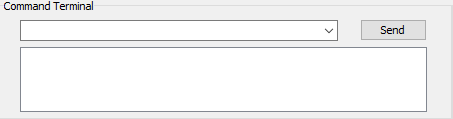
7.4 Parameter Storage
7.4.1 Saving Custom Settings to a Bin
The 525 series has the capability to save up to 6 custom user setups. Once all the custom user settings are ready to be saved to one of six bins, click "Storage", "Save To Bin", followed by selecting the bin number to save the custom settings to. The following figure represents the saving process:
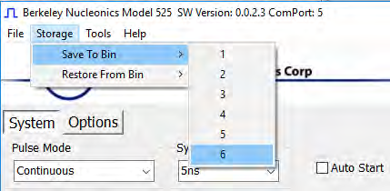
7.4.2 Recalling Custom Settings from a Bin
The 525 series has the capability to recall any of the 6 custom user setups. If any of the previously saved presets are to be recalled, click "Storage", "Restore From Bin", followed by selecting the bin number to recall. The following figure represents the recalling process. Note: Selecting Default 0 will set the 525 to factory default settings.
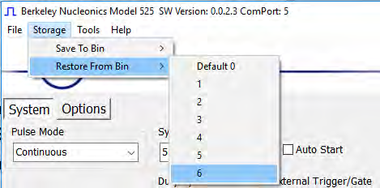
8Operating the 525
8.1 Normal Internal Rate Generator Operation
The 525 has a complete set of functions providing a number of modes of operation for the internal or "System" rate generator (T0). Most of these functions can be ignored if a simple continuous stream of pulses is required. Starting from the default settings, which can be restored by recalling configuration 0, the following parameters need to be set in the 525 application:
- Pulse Width, Delay: Enter the required pulse width and delay found in the Channel section. Repeat for each output channel.
- T0 Period: Set the desired pulse Period found in the System section.
- Enable: Enable the corresponding channels by clicking "Enabled" in the Channel section.
- Start: Press the unit's Run/Stop button to start generating pulses.
- Stop: Press the unit's Run/Stop button once again to stop generating pulses.
8.1.1 Continuous Mode
Pressing the unit's Run/Stop button starts and stops a continuous pulse stream at the rate specified by the Period parameter. This corresponds to the default output mode for most pulse generators. To generate a continuous stream of pulses, set the following parameters in the 525 application:
- Within the System section:
- Select Continuous mode.
- Set the desired pulse Period.
- Within the Channel section:
- Enter the required pulse width and delay. Repeat for each output channel.
- Enable the corresponding channels by clicking "Enabled" in the 525 application.
Pressing the unit's Run/Stop button will now generate a stream of T0 pulses at a rate specified by the Period parameter.
8.1.2 Single Shot Mode
Pressing the unit's Run/Stop button generates a single pulse with every press. Set the following parameters in the 525 application:
- Within the System section:
- Select Single Shot mode.
- Within the Channel section:
- Set channel mode to Normal.
- Enter the required pulse width and delay. Repeat for each output channel.
- Enable the corresponding channels by clicking "Enabled" in the 525 application.
Pressing the unit's Run/Stop button will now generate one pulse out of every enabled channel.
8.1.3 System Burst Mode Function
The Run/Stop button generates a stream of "N" T0 pulses, where the "N" is specified by the Burst parameter. The rate is specified by the Period parameter. Pressing the Run/Stop button while the burst is in process will stop the output. After the burst has been completed, pressing the Run/Stop button will generate another burst of pulses. To generate a burst of pulses set the following parameters in the 525 application:
- Within the System section:
- Select mode to be Burst.
- Set the Burst Count parameter field to produce the number of pulses desired.
- Set the desired Period.
- Within the Channel section:
- Set channel mode to Normal.
- Enter the required pulse width and delay. Repeat for each output channel.
- Enable the corresponding channels by clicking "Enabled" in the 525 application.
Pressing the unit's Run/Stop button will now generate the predefined burst of pulses out of every enabled channel.
8.1.4 System Duty Cycle Function
The Run/Stop button starts a continuous stream of T0 pulses, which repeats for "N" pulses On and "M" pulses Off, where "N" and "M" are specified by the On/Off parameters respectively. The rate at which the pulses are generated is controlled by the Period parameter. To generate a stream of pulses which will repeat for "N" pulses On and "M" pulses, set the following parameters in the 525 application:
- Within the System section:
- Set the mode to Duty Cycle.
- Set the On parameter to the number of pulses to produce during the on cycle ("N").
- Set the Off parameter to the number of pulses to suppress during the off cycle ("M").
- Set the desired Period.
- Within the Channel section:
- Set channel mode to Normal.
- Set the Sync Source to T0 in each respective channel tab.
- Enter the required pulse width and delay. Repeat for each output channel.
- Enable the corresponding channels by clicking "Enabled" in the 525 application.
Pressing the unit's Run/Stop button will now generate duty cycle pulses out of every enabled channel.
8.2 Channel Timer Overview
The output of each channel is controlled by two timers to generate the pulse width and the delay timing. All channels are simultaneously triggered, depending on the system mode, by the internal T0 pulse, the external trigger, or a trigger provided by a user. A given channel may or may not generate a pulse depending on its own channel mode as described below. The examples below assume the system is set to continuous mode.
8.2.1 Channel Normal Function
The Normal mode mimics the system mode once the Run/Stop button is pressed. To use channel normal mode set the following parameters in the 525 application:
- Within the System section:
- Set the mode to Continuous.
- Set the desired Period.
- Within the Channel section:
- Set the mode to Normal.
- Enter the required pulse width and delay. Repeat for each output channel.
- Enable the corresponding channels by clicking "Enabled" in the 525 application.
Pressing the unit's Run/Stop button will now generate a continuous stream of pulses. See "Output Examples" for a visual representation.
8.2.2 Channel Single Shot Function
The Single Shot mode generates a single pulse every time the unit is placed into active mode. To use the channels' single shot mode set the following parameters in the 525 application:
- Within the System section:
- Set the mode to Continuous.
- Set the desired Period (regulates rate of single shots).
- Within the Channel section:
- Set the mode to Single Shot.
- Enter the required pulse width and delay. Repeat for each output channel.
- Enable the corresponding channels by clicking "Enabled" in the 525 application.
Pressing the unit's Run/Stop button will place the unit into active mode and generate a single pulse on the enabled channels. Pressing the unit's Run/Stop button again will take the unit out of the active state (which will not produce a pulse). Continue this process for additional single pulses. See "Output Examples" for a visual representation.
8.2.3 Channel Burst Mode
The burst mode generates a burst of pulses every time the unit is placed into active mode. To use the channels' burst mode set the following parameters in the 525 application:
- Within the System section:
- Set the mode to Continuous.
- Set the desired Period.
- Within the Channel section:
- Set the mode to Burst.
- Set the Burst parameter to the number of pulses to produce during the on cycle ("N").
- Enter the required pulse width and delay. Repeat for each output channel.
- Enable the corresponding channels by clicking "Enabled" in the 525 application.
Pressing the unit's Run/Stop button will place the unit into active mode and generate a burst of pulses on the enabled channels. Pressing the unit's Run/Stop button again will take the unit out of the active state (which will not produce a burst). Continue this process for additional bursts. See "Output Examples" for a visual representation.
8.2.4 Channel Duty Cycle Mode
The channel duty cycle mode will generate a stream of pulses on the channel level which will repeat on for "N" pulses and off for "M" pulses. To generate the stated sequence of pulses set the following parameters in the 525 application:
- Within the System section:
- Set the mode to Continuous.
- Set the desired Period.
- Within the Channel section:
- Set the On parameter to the number of pulses to produce during the on cycle ("N").
- Set the Off parameter to the number of pulses to suppress during the off cycle ("M").
- Enter the required pulse width and delay. Repeat for each output channel.
- Enable the corresponding channels by clicking "Enabled" in the 525 application.
Pressing the unit's Run/Stop button will place the unit into active mode and generate a pulse train based on the duty cycle settings. Pressing the unit's Run/Stop button again will take the unit out of the active state (which will not produce pulses). Continue this process for additional duty cycle pulse trains. See "Output Examples" for a visual representation.
8.3 External Input Overview
The external Trigger/Gate input may be used to trigger the unit or gate the system/channel timers. When used in trigger mode, the external input acts as a system start pulse. Conversely, when used in gate mode, the external input acts in a pulse inhibiting fashion.
8.3.1 Generate a Pulse on Every Trigger Input
To generate a single pulse on every trigger input set the following parameters in the 525 application:
- Within the System section:
- Set the mode to Single Shot mode.
- Set the desired Period.
- Select the Triggered mode.
- Set the trigger threshold level to ~50% of the incoming signal.
- Select which edge (i.e. rising or falling) to trigger on.
- Within the Channel section:
- Set the mode to Normal.
- Enter the required pulse width and delay. Repeat for each output channel.
- Enable the corresponding channels by clicking "Enabled" in the 525 application.
Pressing the unit's Run/Stop button will arm the unit. Once the unit is armed, it will generate a T0 pulse for every external trigger received. Pressing the unit's Run/Stop button or clicking the 525 application's Run/Stop again will disarm the unit. This mode corresponds to the normal external mode found on most other pulse generators. See "Output Examples" for a visual representation.
8.3.2 Using the External Gate to Control the System
The external input configured in System Gate mode may be used to control the output of the unit. To gate the internal system timer with an external source set the following parameters on the 525 application:
- Within the System section:
- Set the desired System mode.
- Set the desired Period.
- Choose *Gated mode.
- Choose the proper *Gated polarity (High/Low).
- Set the threshold level to ~50% of the incoming gate signal.
- Within the Channels section:
- Enter the required pulse width and delay. Repeat for each output channel.
- Set the desired Channel Mode.
8.3.3 Using the External Gate to Control the Channel
The external input configured in Channel Gate mode may also be used to control the output of the unit. To gate the channel timers with an external source set the following parameters on the 525 application:
- Within the System section:
- Set the desired System mode.
- Set the desired Period.
- Set the threshold level to ~50% of the incoming gate signal.
- Within the Channels section:
- Enter the required pulse width and delay. Repeat for each output channel.
- Set the desired channel mode.
- Set the proper **Gate Mode (Active High/Active Low).
8.3.4 Using the External Re-Arm
The external input configured in Re-Arm mode may also be used to externally rearm the channel timers by inputting a trigger pulse to the external input. This is the same as issuing the *ARM command or pressing the run/stop button. To rearm the channel timers with an external source set the following parameters on the 525 application:
- Within the System section:
- Set the desired System mode.
- Set the desired Period.
- Set the threshold level to ~50% of the incoming trigger signal.
- Within the Channels section:
- Enter the required pulse width and delay. Repeat for each output channel.
- Set the desired channel mode.
Pressing the unit's Run/Stop will arm the unit. Once the unit is armed, it will begin generating pulses whenever the external trigger input is in the active state. When the gate is in the active state, the system timer is reset. Pressing the unit's Run/Stop button again will disarm the unit. See "Output Examples" for a visual representation.
8.4 Output Examples
The following figure presents a graphical representation of the channel modes as well as the external trigger/gate functionality. It should be noted that the following figure represents examples only as many parameters in each pulse train below have the potential to be modified.
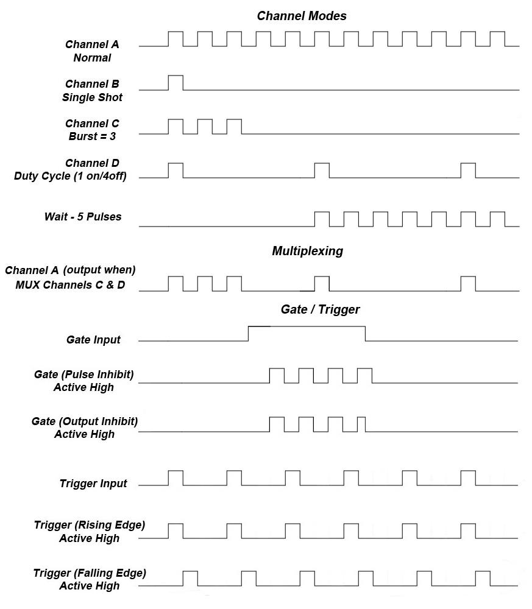
9Programming the 525
9.1 Personal Computer to 525 Communication
The 525 uses USB as the standard interface. All settings can be set and retrieved over either interface using a simple command language or with the included 525 application. The command set is structured to be consistent with the Standard Commands for Programmable Instruments (SCPI). Although due to the high number of special features found in the 525, many of the commands are not included in the specification. The syntax is the same for all interfaces. The average amount of time required to receive, process, and respond to a command at a baud rate of 115200 is 10ms. Sending commands faster than 10ms may cause the unit to not respond properly. It is advised to wait until a response from the previous command is received before sending the next command.
9.2 USB Interface Overview
The USB interface is standard on the 525. Once the proper drivers have been installed, the 525 will show up in the device manager as a USB to Serial Port Adapter. The 525 can then be communicated with by either the included 525 application or by using any generic communication terminal program.
USB communication notes:
- The correct drivers must be installed on the personal computer before communication can be accomplished via USB.
- The unit is baud rate independent, so any speed can be selected. Typically a rate of 115,200bps can be used.
- It is recommended that USB 2.0 (or greater) specification is used. The USB cable can be removed without "ejecting" the device in the operating system environment.
9.3 Programming Command Types and Format
The 525 Pulse Generator uses two types of programming commands: IEEE 488.2 Common Commands and Standard Commands for Programmable Instruments (SCPI). The format is the same for all interfaces. The included 525 application, HyperTerminal (in Windows), or any other generic terminal program may be used to interactively test the commands using the USB interface. The format of each type is described in the following paragraphs.
9.3.1 Line Termination
The pulse generator uses text-style line terminations. When a command is sent to the unit, the firmware is programmed to read characters from a communication port until it reads the line termination sequence. The command string is parsed and executed after reading these characters. These characters are the "carriage return" and "linefeed". They are ASCII character set values 13 and 10 respectively (hex 0x0D and 0x0A). All command strings need to have these characters appended.
When the pulse generator responds to a command, whether it is a query or a parameter change, it also appends its return strings with these characters. Coded applications could use this behavior to know when to stop reading from the unit. However, if the "echo" parameter is enabled, there will be two sets of line terminators, one following the echoed command string, and one following the pulse generator's response.
The pulse generator responds to every communication string. If the communication string is a query, the unit responds with the queried response (or error code) followed by the line terminators. If the communication string is a parameter change, the response is "ok" (or error code) followed by the line terminators. For this reason, it is not recommended that multiple commands be stacked together into single strings as is common with some other types of instruments. It is recommended that the coded application send a single command in a string and follow immediately by reading the response from the unit. Repeat this sequence for multiple commands.
9.3.2 IEEE 488.2 Common Command Format
The IEEE 488.2 Common Commands control and manage generic system functions such as reset, configuration storage and identification. Common commands always begin with the asterisk (*) character and may include parameters. The parameters are separated from the command pneumonic by a space character. For Example:
*RST <cr><lf> *RCL 1 <cr><lf> *IDN? <cr><lf>
9.3.3 SCPI Command Keywords
The commands are shown as a mixture of upper and lower case letters. The upper case letters indicate the abbreviated spelling for the command. You may send either the abbreviated version or the entire keyword. Upper and/or lower case characters are acceptable. For example, if the command keyword is given as POLarity, then POL and POLARITY are both acceptable forms; truncated forms such as POLAR will generate an error; polarity, pol, and PolAriTy are all acceptable as the pulse generator is not case sensitive.
9.3.4 SCPI Command Format
SCPI commands control and set instrument specific functions such as setting the pulse width, delay, and period. SCPI commands have a hierarchical structure composed of functional elements that include a header or keywords separated with a colon, data parameters, and terminators. For example:
:PULSE1:STATE ON <cr><lf> :PULSe1:WIDTh 0.000120 <cr><lf> :PULSe:POL NORMal <cr><lf>
Any parameter may be queried by sending the command with a question mark appended. For example:
:PULSE1:STATE? <cr><lf> will return 1<cr><lf> :PULSE1:WIDTH? <cr><lf> will return 0.000120000 <cr><lf> :PULSE1:POL? <cr><lf> will return NORM <cr><lf>
9.3.5 SCPI Keyword Separator
A colon (:) must always separate one keyword from the next lower-level keyword. A space must be used to separate the keyword header from the first parameter.
9.3.6 SCPI Optional Keywords
Optional keywords and/or parameters appear in square brackets ( [ ] ) in the command syntax. Note that the brackets are not part of the command and should not be sent to the pulse generator. When sending a second level keyword without the optional keyword, the pulse generator assumes that you intend to use the optional keyword and responds as if it had been sent.
SCPI Specific and Implied Channel. Some commands, such as PULSe, allow specifying a channel with an optional numeric keyword suffix. The suffix will be shown in square brackets [ 1 / 2 ]. The brackets are not part of command and are not to be sent to the pulse generator. The numeric parameters correspond to the following channels: 0 = T0, 1 = ChA, 2 = ChB, etc. Only one channel may be specified at a time. If you do not specify the channel number, the implied channel is specified by the :INSTrument:SELect command or the last referenced channel. After power-up or reset (*RST) the instrument will default to channel #1.
9.3.7 SCPI Parameter Types
The following parameter types are used:
- <Numeric Value> – Accepts all commonly used decimal representation of numbers including optional signs, decimal points, and scientific notation. For Example: 123, 123e2, -123, -1.23e2, .123, 1.23e-2, 1.2300E-01.
- <Boolean Value> – Represents a single binary condition that is either true or false. True is represented by a 1 or ON; false is represented by a 0 or OFF. Queries return 1 or 0.
- <Identifier> – Selects from a finite number of predefined strings.
9.3.8 Error Codes
The unit responds to all commands with either: ok <cr><lf> or ?'n'<cr><lf> where "n" is one of the following error codes:
- Incorrect prefix, i.e. no colon or * to start command.
- Missing command keyword.
- Invalid command keyword.
- Missing parameter.
- Invalid parameter.
- Query only, command needs a question mark.
- Invalid query, command does not have a query form.
- Command unavailable in current system state.
9.3.9 Programming Examples
Example 1) 20 ms pulse width, 2.3 ms delay, 10 Hz internal trigger, and continuous operation.
:PULSE1:STATE ON <cr><lf> enables channel A :PULSE1:POL NORM <cr><lf> sets polarity to active high :PULSE:WIDT 0.020 <cr><lf> sets pulse width to 20 ms :PULSE1:DELAY 0.0023 <cr><lf> sets delay to 2.3 ms :PULSE0:MODE NORM <cr><lf> sets system mode to continuous :PULSE0:PER 0.1 <cr><lf> sets period to 100 ms (10 Hz) :PULSE0:EXT:MODE DIS <cr><lf> disables the external trigger
To start the pulses use either of the following commands:
:PULSE0:STATE ON <cr><lf> starts the pulses :INST:STATE ON <cr><lf> alternate form to start pulses
Example 2) 25µs pulse width, 0 delay, external trigger, and one pulse for every trigger.
:PULSE1:STATE ON <cr><lf> enables channel A :PULSE1:POL NORM <cr><lf> sets polarity to active high :PULSE:WIDT 0.000025 <cr><lf> sets pulse width to 25 us :PULSE1:DELAY 0 <cr><lf> sets delay to 0 :PULSE0:MODE SING <cr><lf> sets system mode to single shot :PULSE:EXT:MODE TRIG <cr><lf> sets system to external trigger :PULS:EXT:LEV 2.5 <cr><lf> sets trigger level to 2.5 volts :PULS:EXT:EDGE RIS <cr><lf> set to trigger on rising edge
To arm the instrument in external gate mode, use either of the following commands:
:PULSE0:STATE ON <cr><lf> Arms the instrument :INST:STATE ON <cr><lf> Alternate form if T0 is currently selected.
A software generated external trigger can be generated by using the following command:
*TRG <cr><lf> Generates a software external trigger
9.4 525 SCPI Command Summary
| Command | Keyword 2 | Keyword 3 | Parameter Range | Notes |
|---|---|---|---|---|
:INSTrument | The units' upper level command keyword. | |||
:CATalog | ? | Returns a comma separated list of the names of all channels. | ||
:COMMands | ? | Returns an indentured list of all valid SCPI commands. | ||
:FULL | ? | Returns a comma-separated list of the names of all the channels and their associated number. | ||
:NSELect | 0 - 4 | Selects a channel using the numeric value. | ||
:SELect | T0 / CH[A-F] | Selects a channel using the identifier. | ||
:STATe | 0/1 or OFF/ON | Enables/Disables the selected channel output. If no channel has been selected the command is applied to T0. If T0 is selected all outputs are affected. Enabling T0 is the same as pressing the RUN button. |
| Command | Keyword 2 | Keyword 3 | Parameter Range | Notes |
|---|---|---|---|---|
:PULSe[0] | Command to change the units' global settings, this is the same as using the :SPULse command. | |||
:BCOunter | 1-1,000,000 | Changes the number of pulses to output when the system is in burst mode.*Note: The commas should be omitted. | ||
:CCOunter | 0 to 1,000,000 | Cycle counter. Sets the number of system cycles to repeat when in duty cycle mode. Setting to zero disables any cycle counts. | ||
:COUNter | Subsystem. Contains commands to define the Counter function. | |||
:STATe | 0/1 or OFF/ON | Enables/Disables the counter function. | ||
:SOURce | T0, CHA, CHB, CHC, CHD | Selects the counter source. Default is T0. | ||
:CLear | Clears the active counter. | |||
:COUNt? | Reports the clock pulses output except, in single shot mode, in this case the trigger pulses input on the channel will be displayed. | |||
:EXTernal | Submenu for selecting the trigger input. | |||
:MODe | DISabled / TRIGger / GATe / REARM | Selects the trigger mode. | ||
:LEVel | 0.2 - 15[V] | Choose the gate level threshold to trigger on which should be set to ~50% of the input voltage. | ||
:EDGe | RISing / FALLing | Selects which edge (rising or falling) to use as the trigger signal. | ||
:POLarity | LOW / HIGH | Sets the polarity of the gate signal. HIGH output is active when the gate signal is high; LOW output is active when the gate signal is low. | ||
:EXTPeriod | External trigger period. | |||
:STATe | 0/1 or OFF/ON | Enables/Disables the counter function. | ||
:AUTo | 0/1 or OFF/ON | Sets auto update mode. Auto will continually update the value, over-writing the previous value. | ||
:CLear | Clears the active counter. | |||
:NCOUnts | 1 to 15 | Number of periods to average. | ||
:COUNt? | Reports the number of clock counts between input pulses. | |||
:PERiod? | Returns the period value taking into consideration the number of averaging counts and system resolution. Value is in seconds. | |||
:ACTive? | Reports if actively counting period. State will be zero if not actively counting the period. | |||
:ICLock | SYS / 10 / 20 / 25 / 30 / 40 / 50 / 60 / 80 / 100 | Input Clock Source. Sets source for the internal rate generator. System Clock or External Source ranging from 10MHz to 100MHz. | ||
:MODe | NORMal / SINGle / BURSt / DCYCle | Changes the system output mode. | ||
:OCLock | T0 / 10 / 20 / 25 / 30 / 40 / 50 / 60 / 80 / 100 | Output Clock. Sets external clock output. T0 Pulse or 50% duty cycle TTL output from 10MHz to 100MHz. | ||
:OCOunter | 1-1,000,000 | Changes the number of off pulses to suppress when the system is in Duty Cycle mode.*Note: The commas should be omitted. | ||
:PCOunter | 1-1,000,000 | Changes the number of on pulses to output when the system is in Duty Cycle mode.*Note: The commas should be omitted. | ||
:PERiod | 200[ns] - 1000[s] | Sets the T0 period. The command should be sent without units. If for example 200ns is desired the parameter sent should be 200e-9, or the decimal equivalent. | ||
:RESolution | 4 / 5 | Sets the system resolution between 4 or 5ns. This affects the resolution of the period, widths and delays. | ||
:STATe | 0/1 or OFF/ON | Enables/Disables the output for all channels. This command is the same as pressing the Run/Stop button. | ||
:UPDate | Update mode. | |||
:AUTO | 0/1 or OFF/ON | Turns on or off auto register update mode. When off registers are synchronously updated on command. | ||
:EXecute | Initiates a synchronous update if in manual update (synchronous) mode. | |||
| Command | Keyword 2 | Keyword 3 | Parameter Range | Notes |
|---|---|---|---|---|
:PULSe[1/2/n] | Command to change the units' channel specific settings. | |||
:STATe | 0/1 or OFF/ON | Enables/Disables output pulse for selected channel. | ||
:WIDTh | 10[ns] - 1000[s] | Sets the pulse width for the selected channel. The command should be sent without units. If for example 50ns is desired the parameter sent should be 50e-9, or the decimal equivalent. | ||
:DELay | +/-1000[s] | Sets the delay from the timing reference to when the pulse is created. The command should be sent without units. If for example 50ns is desired the parameter sent should be 50e-9, or the decimal equivalent. | ||
:SYNC | T0, CHA, CHB, CHC, CHD | Allows the user to select the timing reference for each channel.*Note: Cannot set a channel to be synced to itself. | ||
:MUX | 0-15 | Decimal representation of a 6 bit binary number (example: 15 = 1111). | ||
:POLarity | NORMal / COMPlement / INVerted | Normal is active HIGH, Inverted and Complement are active LOW. | ||
:OUTPut | Command to change the channels' output parameters. | |||
:AMPLitude | 3.3 - 5 [V] | Allows the user to select adjustable TTL/CMOS output voltages. | ||
:CMODe | NORMal / SINGle / BURSt / DCYCle | Allows the user to select the pattern of outputs to use on the channel level. | ||
:BCOunter | 1 to 1,000,000 | When the channel is in Burst mode will allow user to select the number of pulses to output with each input clock pulse.*Note: The commas should be omitted. | ||
:PCOunter | 1 to 1,000,000 | When the channel is in duty cycle mode will allow the user to select the number of pulses to create with each input clock pulse.*Note: The commas should be omitted. | ||
:OCOunter | 1 to 1,000,000 | When the channel is in duty cycle mode will allow the user to select the number of pulses to suppress with each input clock pulse.*Note: The commas should be omitted. | ||
:WCOunter | 0 to 1,000,000 | Allows user to select how many clock cycles to wait until the channel should start creating an output pulse.*Note: commas should be omitted. | ||
:CGATe | DIS / LOW / HIGH | Channel Gate Subsystem. Contains commands to control using the gate input to control the output channel. | ||
| Command | Keyword 2 | Keyword 3 | Parameter Range | Notes |
|---|---|---|---|---|
:SYSTem | Command to change the units' system settings. | |||
:STATe | ? | Query Only Command. | ||
:BEEPer | Command to change the units' beeper settings. | |||
:STATe | 0/1 or OFF/ON | Command to turn on or off the systems' beeper. | ||
:COMMunicate | Command to set the communication settings. | |||
:USB | ||||
:ECHo | 0/1 or OFF/ON | Command to Enable/Disable the echo function on the USB interface. The Echo function will cause the unit to repeat the command received to the PC. | ||
:AUTorun | 0/1 or OFF/ON | When the unit is powered up, if this command is enabled, the unit will start pulsing automatically. | ||
:VERSion | ? | Query only. Returns SCPI version number in the form YYYY.V for ex. 1999.0. | ||
9.5 IEEE 488.2 Common Commands
| Command | Parameter Range | Notes |
|---|---|---|
*IDN | ? | Query only. Returns model, serial number, firmware version, and FPGA version numbers. |
*RCL | 0 - 6 | Recalls configuration from specified storage location. |
*RST | RESET. Resets parameters, same as *RCL 0. | |
*SAV | 1 - 6 | Saves current parameters to desired storage location. |
*SER | ? | Serial number query. |
*TRG | Creates a soft trigger input. | |
*ARM | Resets all channel counters simultaneously when the channels are in either single shot or burst mode.*Note: The system must be in continuous mode (this command is functionally the same as pressing the Run/Stop button). |
10Appendix A – Specifications
10.1 525 Specifications
- Indoor use in dry conditions only.
- Ordinary Protection: This product is NOT protected against harmful ingress of moisture.
- Class III Equipment (external 5Vdc SELV power source).
- USB power draw from the USB Host Port: 5Vdc 0.5A.
- Pollution Degree II (Micro-Ambient Pollution restricted to temporary conductivity caused by condensation).
- External Power Supply: Installation (Overvoltage) Category II for transient over-voltages.
- Maximum Relative Humidity: 0-80% relative humidity, non-condensing.
- Maximum altitude: 0 to 2000m (6562 ft.).
- Accessories: USB cable.
- Cleaning Instructions: Light dusting with cloth damp with water and/or usage of compressed air is all that is needed.
| 525 Specifications | MIN | TYP | MAX | UNIT |
|---|---|---|---|---|
| I/O Configuration | ||||
| Outputs | 6 Independent Channels; 1 Selectable Clock Output | |||
| Inputs | 1 Selectable Trigger/Gate Input; 1 External Clock Input | |||
| Internal Rate Generator | ||||
| Rate (T0 Period) | 0.001 | - | 20,000,000 | Hz |
| Resolution | - | 4/5 | - | ns |
| Accuracy | 4/5ns + (0.0001 x Period) | |||
| T0 Period Jitter | - | - | 50 | ps(RMS) |
| Time Base | 200/250MHz, Low Jitter PLL | |||
| Oscillator | 50MHz, 50ppm Crystal Oscillator | |||
| System Modes | Single, Continuous, Burst, Duty Cycle, Cycle Counter | |||
| Synchronized Update Mode | Updates widths and delays on command | |||
| Pulse Counter | - | 32 | - | Bit |
| Period Counter | - | 32 | - | Bit |
| Duty Cycle – Cycle Counter | 0 | - | 1,000,000 | Pulses |
| Burst Mode | 1 | - | 4x109 | Pulses |
| Duty Cycle Mode | 1 | - | 4x109 | Pulses |
| Pulse Control Modes | Internal Rate Generator, External Trigger/Gate | |||
| Channel Timing Generator | ||||
| Pulse Width Range | 10n | - | 1,000 | s |
| Width Accuracy | 4/5ns + [0.0001 x (width + delay)] | |||
| Width Resolution | - | 4/5 | - | ns |
| Pulse Delay Range | -1,000 | - | 1,000 | s |
| Delay Accuracy | 4/5ns + (0.0001 x delay) | |||
| Delay Resolution | - | 4/5 | - | ns |
| Jitter (Channel to Channel) | - | - | 150 | ps(RMS) |
| Multiplexer | Any/all channels may be OR'd to any/all outputs | |||
| Time Base | Same as internal rate generator | |||
| Channel Modes | Single Shot, Normal, Burst, Duty Cycle | |||
| Burst Mode | 1 | - | 1,000,000 | Pulses |
| Duty Cycle Mode | 1 | - | 1,000,000 | Pulses |
| Wait Function | 0 | - | 1,000,000 | Pulses |
| Control Modes | Internally triggered or externally gated. Each channel may be independently set to either mode. | |||
| System External Trigger/Gate Input | ||||
| Trigger Input Function | System can generate a single, burst, or duty cycle response of pulses for every external trigger pulse. See "External Input Overview" for more information. External input can also be configured to act like a *ARM command when set to REARM mode. | |||
| Trigger Edge | Rising / Falling | |||
| Gate Input Function | External gate input controls the output of the unit | |||
| Gate Input Modes | System Gate (Pulse Inhibit); Channel Gate (Output Inhibit). See External Trigger/Gate section for more information | |||
| Gate Polarity | Active High / Active Low | |||
| Trigger/Gate Input Module | ||||
| Threshold | 0.2 | - | 15 | V |
| Max Input Voltage (Peak) | - | - | 30 | V |
| Resolution | - | 10 | - | mV |
| Trigger Accuracy | ±3% of Threshold Voltage | |||
| Impedance | 5.3K ohm + 40pF | |||
| Trigger Rate | DC | - | 20 | MHz |
| Trigger Input Jitter | - | - | 6 | ns(RMS) |
| Trigger Input Insertion Delay | - | - | 100 | ns |
| Trigger Input Minimum Pulse Width | 20 | - | - | ns |
| Pulse Inhibit Delay | - | - | 150 | ns |
| Output Inhibit Delay | - | - | 100 | ns |
| External Period Counter Rate | DC | - | 20 | MHz |
| Output Module | ||||
| Output Impedance | - | 50 | - | Ohms |
| Output Level | 3.3 – 5.0 VDC into ≥ 1K ohm; 1.7 – 2.5 VDC into 50 ohm | |||
| Resolution | - | 20 | - | mV |
| Output Current | 5mA typical into 1K ohm; 50mA typical into 50 ohm | |||
| Rise Time (10% - 90%) | < 2ns typical @ 5V (High Imp); < 1ns typical @ 2.5V (50 ohm) | |||
| Slew Rate | 2 | - | - | V/ns |
| Overshoot | < 100mV + 10% of pulse amplitude | |||
| Communications | ||||
| USB | Standard – USB 2.0 | |||
| Baud Rate | - | 115200 | - | bps |
| General | ||||
| Dimensions | 7.125" x 6.75" x 2.25" (18.1 x 17.2 x 5.7 cm) | |||
| Weight | - | 1 | - | lbs |
| Power | ||||
| Voltage Input | 4.75 | - | 5.25 | VDC |
| Current Input | (1)210 | (2)230 | (3)470 | mA |
| Fuse | Internal current sense circuit incorporated. No external fuse is provided. | |||
| Memory | - | 6 | - | Bins |
| Operation Temperature | 0 | - | 40 | Celsius |
| Storage Temperature | -40 | - | 70 | Celsius |
(1) Minimum current input is defined as the current consumed when the unit is in idle state (i.e. not pulsing). (2) Typical current input is defined as the current consumed when all 6 channels are pulsing into high impedance loads at 5V, rate of 10Hz, 50% duty cycle. (3) Maximum current input is defined as the current consumed when all 4 channels are pulsing into 50 Ohm loads at 5V, active low mode.
11Appendix B – TZ50 (Impedance Match Option)
11.1 TZ50 Overview
This "TZ50" option allows a user to terminate into a 50 Ohm load while maintaining output amplitudes of at least 4 Volts. All other functionality of the module is the same as the 525. The output may be adjusted accordingly as before; although, due to the alternate internal circuitry, one should expect to see lower amplitudes when terminated into a 50 Ohm load. This concept is due to the voltage divider theory.
When terminated into high impedance loads (≥ 1K ohm), one should expect to see the set amplitude, accompanied with substantial overshoot and ringing. See Figures D.1 and D.2 for visual representations of these scenarios. This option cannot be mixed with a standard output. If ordered, the TZ50 will be applied to every channel.
11.1.1 TZ50 Specifications
| TZ50 Specifications | MIN | TYP | MAX | UNIT |
|---|---|---|---|---|
| Output Module | ||||
| Output Impedance | - | 8 | - | Ohms |
| Output Level | 3.3 – 5.0 VDC into ≥ 1K ohm; 2.8 – 4.4 VDC into 50 ohm | |||
| Output Current | 5mA typical into 1K ohm; 86mA typical into 50 ohm | |||
| Rise Time (10% - 90%) | < 1ns typical @ 5V (High Imp); < 2ns typical @ 4.4V (50 ohm) | |||
| Slew Rate | 2 | - | - | V/ns |
| Overshoot | < 100mV + 85% of pulse amplitude into ≥ 1K ohm; < 100mV + 20% of pulse amplitude into 50 ohm | |||
11.1.2 Terminating Into 50 Ohms
The following figure shows a typical pulse when set to 5V upon being terminated into a 50 Ohm load:
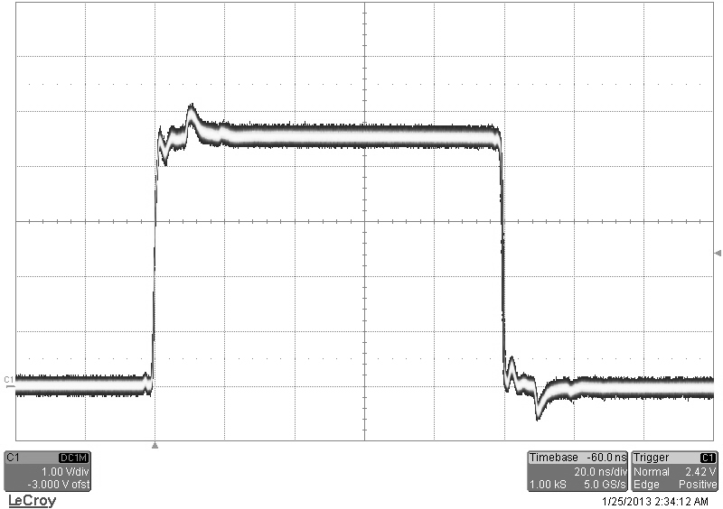
11.1.3 Terminating Into High Impedance
The following figure shows a pulse when set to 5V upon being terminated into high impedance:
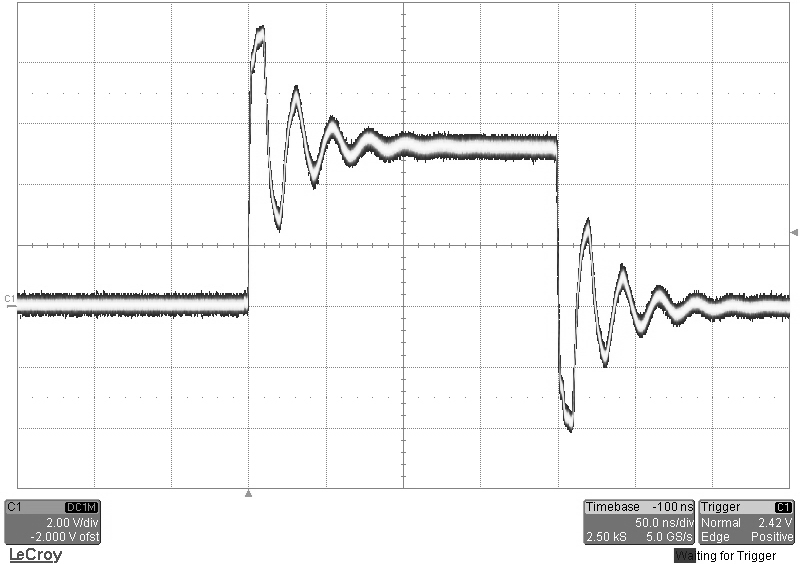
12Appendix C – Safety Symbols
12.1 Safety Marking Symbols
This section provides a description of the safety marking symbols that may appear on the instrument. These symbols provide information about potentially dangerous situations which can result in death, injury, or damage to the instrument and other components.
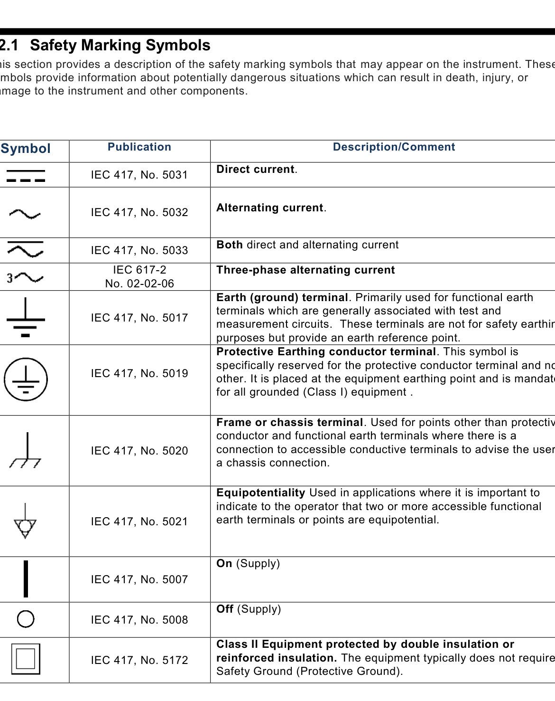
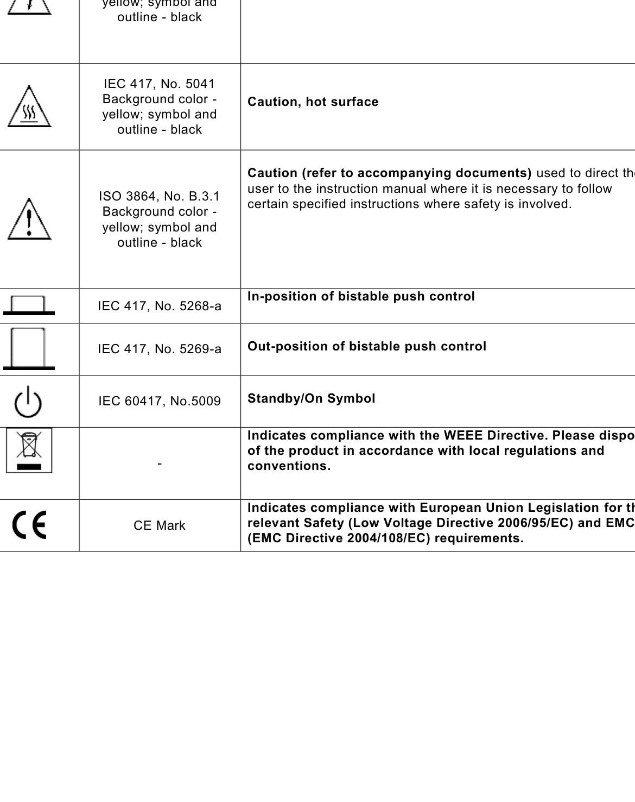